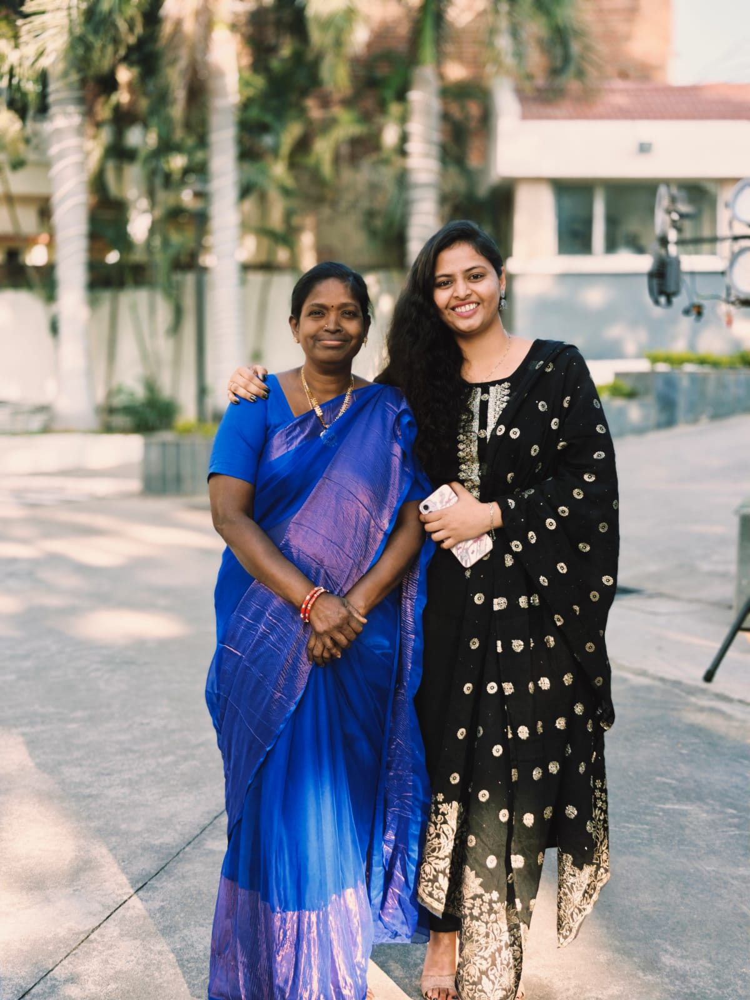
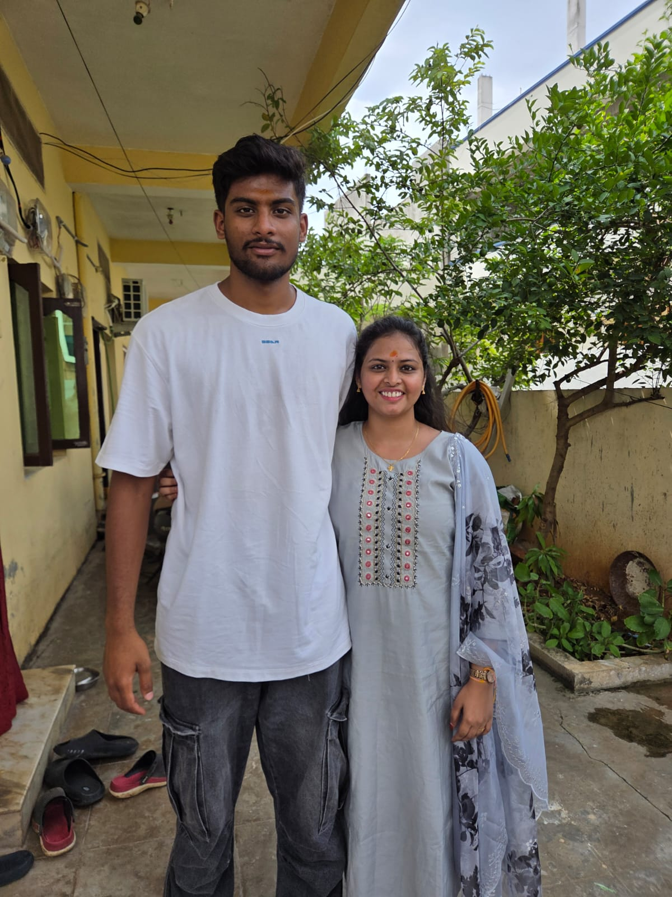

My parents are from Suryapet, Telangana, India. They were married in 1987
through an arranged marriage. Both of them are members of The Church of
Jesus Christ of Latter-day Saints. They taught me faith, honesty, and hard work.

My mother, my support system
My Mom
My mother works as a tailor and has always worked hard to provide for our family.
I lost my father when I was 12 years old, and from that day she became my greatest
support system. Because of her sacrifices and love, I am able to study and pursue my dreams today.

Sri, my younger brother
My Brother Sri
My cousin brother Sri is like my younger brother. He is a talented basketball player
in India and works hard to improve his skills every day. He is disciplined and
passionate about sports. I am proud of his dedication and determination.